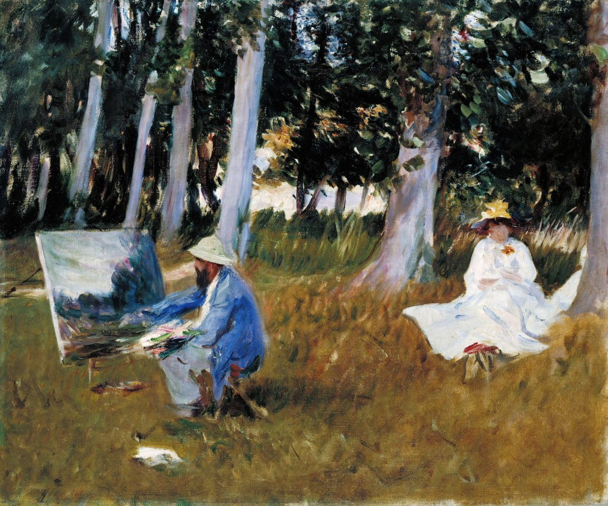

Джон Сингер Сарджент
Claude Monet Painting by the Edge of a Wood (Картина Клода Моне «На опушке леса»), 1885

🏛 Британская галерея Тейт, Лондон
Подарок от Эмили Сарджент и Вайолет Сарджент Ормонд (урождённой Сарджент) через Художественный фонд, 1925 г.
Сарджент впервые встретился с Моне в 1876 году, но ближе всего они сошлись 10 лет спустя. Вероятно, в 1885 году они вместе писали картины в Живерни, недалеко от Парижа. Сарджент восхищался тем, как Моне работал на пленэре, и подражал некоторым его сюжетам и приёмам в таких набросках, как этот. Для Сарджента характерно то, что он изображает Моне с человеческой точки зрения и показывает, с каким терпением его жена сидит позади него. Когда в 1885 году Сарджент поселился в Лондоне, его поначалу считали авангардистом, но со временем он стал величайшим портретистом своего времени.
Источник: https://www.tate.org.uk/art/artworks/sargent-claude-monet-painting-by-the-edge-of-a-wood-n04103